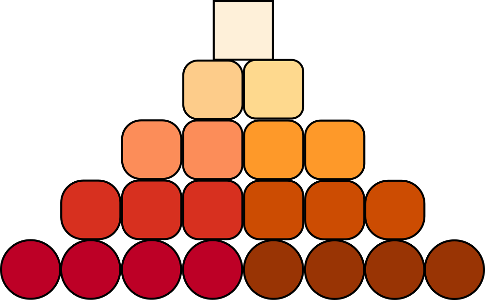
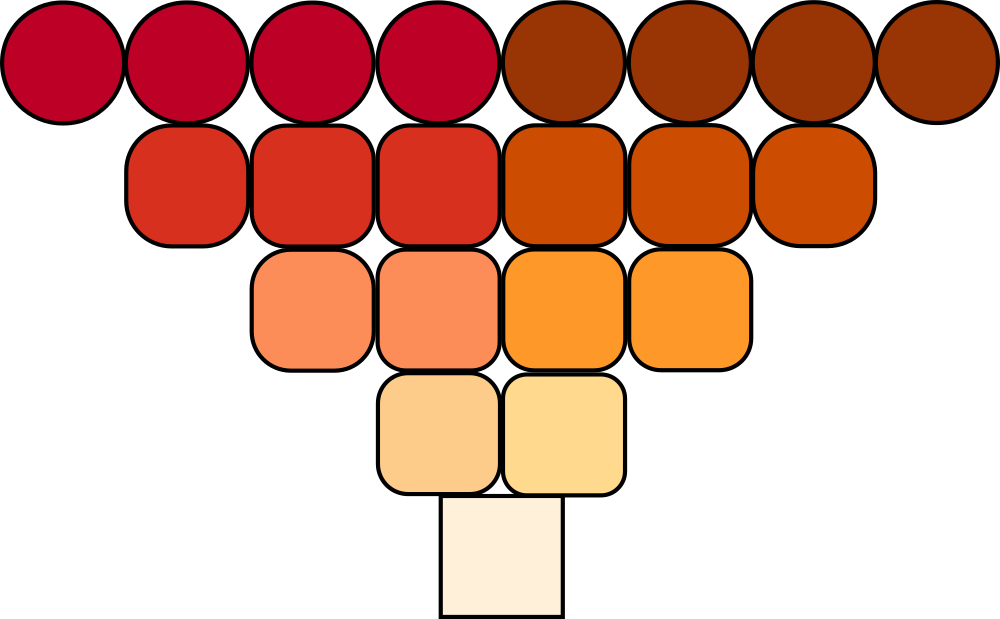
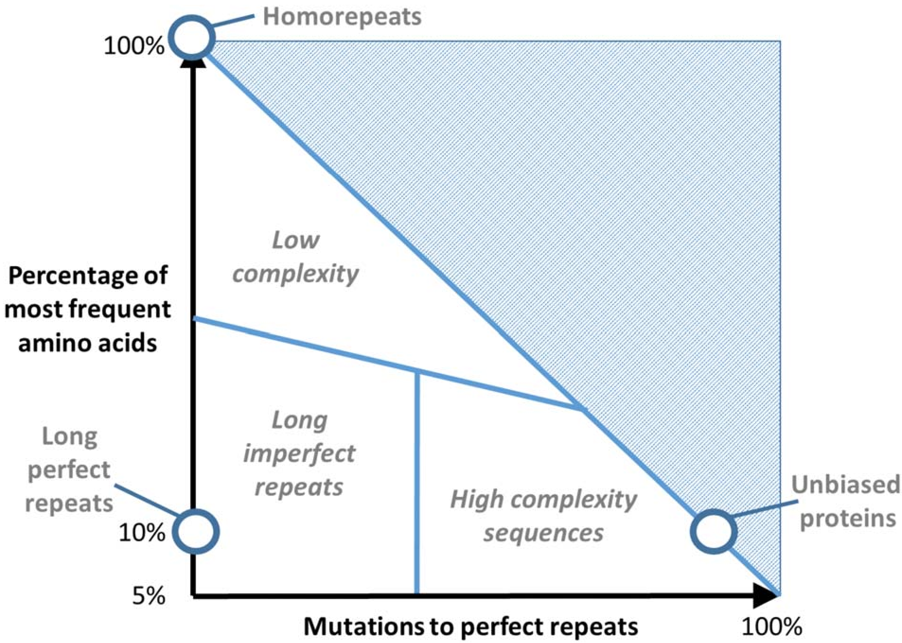
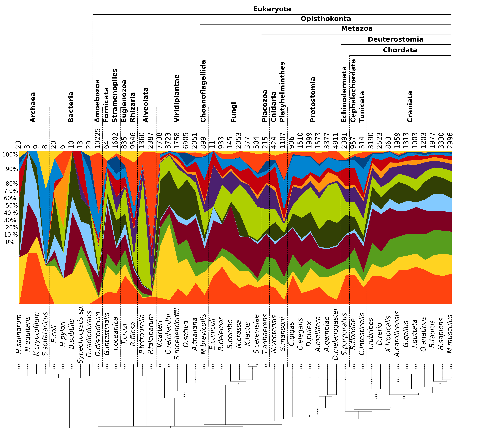
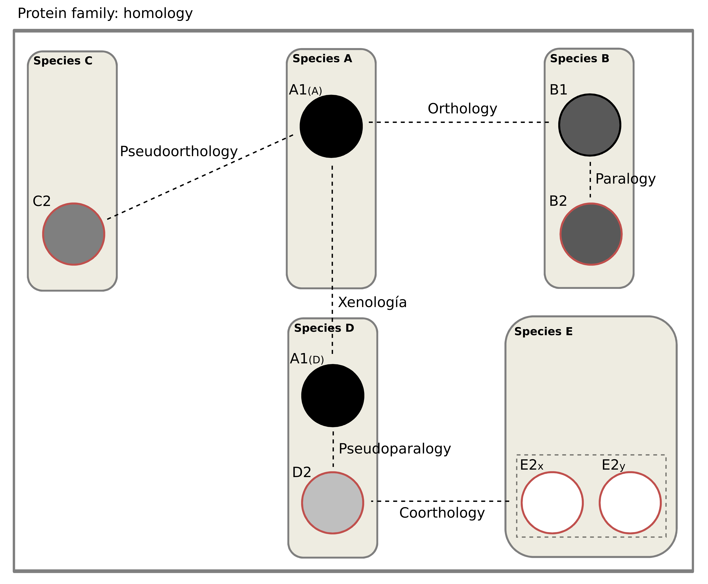
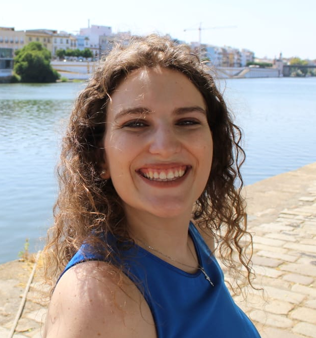

Welcome to the Low Complexity in Evolution research group
We are a group established at the Pablo de Olavide University (Seville, Spain) since late 2024, as part of the UPOBioinfo Group.
At the moment, the group is maintained with funds obtained from the Spanish government in the Beatriz Galindo Fellowship call 2023 and the Proyecto de Generación del Conocimiento 2024 call.
Send me an email if you are interested in working in the group or collaborate with us.
Internships, BSc. theses/projects and MSc. theses/projects are always welcome :)
News
- January 2026: Nerea Blanco has started the first PhD of the LCE group.
- July 2025: Our project "PolyX at the Evolutionary Scale: Definition, Functional Roles, and Homorepeat Interplay (PolyX-Evo)" has been proposed for funding in the last Proyecto de Generación del Conocimiento 2024 call.
- March 2025: Dr. Mier was appointed as Researcher at the Andalusian Centre for Developmental Biology CABD (Seville, Spain).
- December 2024: We just moved to our new office in the Andalusian Centre for Developmental Biology CABD (Seville, Spain).

Research Interests

Low Complexity Regions (LCRs)
LCRs are proteins regions where the frequency distribution of amino acids deviates from the common amino acid usage. Residues in LCRs have been estimated to represent 20% and 8% of all known sequences of eukaryotes and non-eukaryotes, respectively. In the definition of LCRs, multiple concepts related to sequence composition, periodicity and structure have been used. Regarding amino acid composition, while there is a general notion that LCRs in proteins should have an excess of one or a few types of amino acid residues, there is no consensus about which metrics are the most appropriate. Additionally, the concept of LCR is intermingled with the concept of sequence repeats. Repeats are inevitably associated with LCRs, since shorter repeats result in regions with lower amino acid diversity.
Figure and text adapted from Mier et al. (2020) Brief Bioinform 21, 458-472. PMID: 30698641.

Homorepeats
Homorepeats, polyX or amino acid repeats, are protein motifs defined as consecutive runs of a single residue. They are the simplest low complexity region and rely on a highly localized abundance of an amino acid. Any amino acid can form them, although some polyX are much more abundant than others (which also depends on the species taxonomy). They are associated with multiple functionalities, from aiding protein localization to mediating protein–protein interactions. Many homorepeats have not been functionally characterized yet, despite their high abundance in eukaryotes (15% of proteins contain at least one of them). This makes them an interesting protein motif for a post-sequencing step in terms of proteome annotation.
Text from Mier and Andrade-Navarro (2022) Genes 13, 758. PMID: 35627143.
Figure from Mier et al. (2017) Proteins 85, 709-719. PMID: 28097686.

Evolution
Orthologs and paralogs are two fundamentally different types of homologous genes that evolved, respectively, by vertical descent from a single ancestral gene and by duplication. Orthology and paralogy are key concepts of evolutionary genomics. A clear distinction between orthologs and paralogs is critical for the construction of a robust evolutionary classification of genes and reliable functional annotation of newly sequenced genomes. Genome comparisons show that orthologous relationships with genes from taxonomically distant species can be established for the majority of the genes from each sequenced genome.
Text from Koonin (2005) Annu Rev Genet 39, 309-338. PMID: 16285863.
Figure from the thesis "Desarrollo de herramientas y protocolos bioinformáticos para la búsqueda de proteínas ortólogas y su aplicación en análisis evolutivos" (Teseo: 371694).
LCE Publications
- Moreno-Rodríguez A, Pérez-Pulido AJ, Mier P*. Amino acid homorepeats in tape measure proteins correlate with bacteriophage tail length. Journal of General Virology (2026). In press.
- Blanco N, Mier P*. Swappable and non-swappable homorepeats in orthologous proteins reflect distinct patterns of evolutionary flexibility. Scientific Reports (2026). In press.
- Vagiona AC, Mier P, Andrade-Navarro MA*. Unraveling cooperative and competitive interactions within protein triplets in the human interactome. Scientific Reports 15(2025), 32548. PMID:40954205.
- Andrade-Navarro MA*, Mier P. Xsurvey: web tool to query the set of homotepears of all reference proteomes. IEEE/ACM Trans Comput Biol Bioinform (2025). PMID:40811305.
- Mier P*, Andrade-Navarro MA, Morett E*. Apparent differences between human and chimp proteomes are reduced when considering human population: Human specific variants are enriched in disordered and compositionally biased regions. PLoS One (2025).PMID:40743127.
- González-Delgado J, Mier P, Bernadó P, Neuvial P, Cortés J*. The dependence of the amino acid backbone conformation on the translated synonymous codon is not statistically significant. Proc Natl Acad Sci U S A 122(2025), e2503264122. PMID:40512784.
- Moreno-Rodríguez A, Pérez-Pulido AJ, Mier P*. Evolutionary perspective of the CAG/CAA interplay coding for pure polyglutamine stretches in proteins. NAR Genom Bioinform 7(2025), lqaf075. PMID:40491971.
Selected Past Publications
- Schumbera E+, Mier P+, Andrade-Navarro MA*. Phase separating Rho: a widespread regulatory function of disordered regions in proteins revealed in bacteria. Signal Transduction and Targeted Therapy 8(2023), 253. PMID:37344523.
- Jarnot P, Ziemska-Legiecka J, Dobson L, Merski M, Mier P, Andrade-Navarro M.A., Hancock J.M., Dosztanyi Z, Paladin L, Necci M, Piovesan D, Tosatto S.C.E., Promponas V.J., Grynberg M., Gruca A*. PlaToLoCo: the first web meta-server for visualization and annotation of low complexity regions in proteins. Nucleic Acids Res 48(2020), W77-W84. PMID:32421769.
- Urbanek A, Popovic K, Morató A, Estaña A, Elena-Real CA, Mier P, Fournet A, Allemand F, Delbecq S, Andrade-Navarro MA, Cortés J, Sibille N, Bernadó P*. Flanking Regions Determine the Structure of the Poly-Glutamine in Huntingtin through Mechanisms Common among Glutamine-Rich Human Proteins. Structure 28(2020), 733-746. PMID:32402249.
- Mier P*, Paladin L, Tamana S, Petrosian S, Hajdu-Soltész B, Urbanek A, Gruca A, Plewczynski D, Grynberg M, Bernadó P, Gáspári Z, Ouzounis C, Promponas VJ, Kajava AV, Hancock JM, Tosatto SCE, Dosztanyi Z, Andrade-Navarro MA. Disentangling the complexity of low complexity proteins. Brief Bioinform 21(2020), 458-472. PMID:30698641.
- Tørresen OK, Star B, Mier P, Andrade-Navarro MA, Bateman A, Jarnot P, Gruca A, Grynberg M, Kajava AV, Promponas VJ, Anisimova M, Jakobsen KS, Linke D*. Tandem repeats lead to sequence assembly errors and impose multi-level challenges for genome and protein databases. Nucleic Acids Res 47(2019), 10994-11006. PMID:31584084.
- Totzeck F, Andrade-Navarro MA, Mier P*. The Protein Structure Context of PolyQ Regions. PLoS ONE 12(2017): e0170801. PMID:28125688.
Lab Members
Dr. Pablo Mier
Education: Ph.D. in Bioinformatics in Biotechnology and Biomedicine, Universidad Pablo de Olavide (Seville, Spain)
Research Interests: Low Complexity Regions, Homorepeats, Molecular Biology, Protein-Protein Interactions, ...
Email: pmiemun@upo.es, pmiemun@gmail.com
Previous positions: Postdoctoral researcher in JGU (Mainz, Germany), in the CBDM group (2015-2024)


Nerea Blanco
Role: PhD student
Education: M.Sc. in Healthcare Biotechnology, Universidad Pablo de Olavide (Seville, Spain)
Email: nereabp22@gmail.com
Ana Alcaide Márquez
Role: M.Sc. student
Email: anaalcaidemarquez@gmail.com
Bianca Marele
Role: B.Sc. student
Email: bmar4@alu.upo.es
*Co-tutored with Prof Dr Inés Canosa & Prof Dr Amando Flores
Ramón Alarcón Márquez
Role: B.Sc. student
Email: alarcon.marquez.ramon@gmail.com
*Co-tutored with Prof Dr Aroa López & Prof Dr Fernando Govantes
Previous group members: Paola Ojeda Fernández (BSc student, Sep 2025 - June 2026), Guillermo Fernández Infante (BSc student, Sep 2025 - June 2026), Alberto Pérez Royo (MSc student, Dec 2024 - Jun 2025).
Where are we?
We are located at the Pablo de Olavide University (Seville, Spain).
You can find us in the building of the Andalusian Centre for Developmental Biology (CABD); see the map below:
How to get here
To get to the Pablo de Olavide University in Seville, you can follow these directions depending on your mode of transportation:
By Car
From the city center:- Take Avenida de la Palmera heading south.
- Continue onto SE-30 highway.
- Take exit 9 towards Pablo de Olavide University.
- Use the SE-30 highway and follow signs for "Universidad Pablo de Olavide".
- Take exit 9.
By Public Transport
Metro:- Metro line 1 has a stop at Pablo de Olavide University.
- From the city center, you can take the metro from any station on line 1 and get off at the "Universidad Pablo de Olavide" station.
- Several bus lines serve the university. You can check the local bus schedules for the best route from your location.
Contact
- Email: pmiemun@upo.es
- Address: Centro Andaluz de Biologia del Desarrollo, Avenida Rectora Rosario Valpuesta 1, 41089 Dos Hermanas (Sevilla)